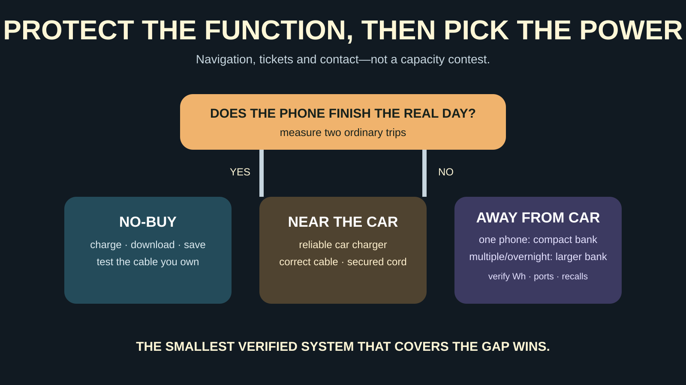

GEAR SYSTEM · PHONE POWER
Family Power Banks: 5,000 vs 10,000 vs 20,000 mAh—and the Car-Charger Option
Buy enough reserve for navigation, tickets and the ride home—not the largest battery you can carry. A working car charger often beats another lithium pack.

Who needs this—and who should skip the purchase
Buy or reorganize: families that rely on a phone for navigation, digital tickets, weather, emergency contact or photos and regularly finish outings near empty. Skip the purchase: families whose phones comfortably finish the real day, who already own a safe bank with readable specifications, or whose failure is a damaged cable, dirty port, disabled car outlet or forgotten charging habit.
This guide is about keeping essential phone functions available. It is not a reason to keep children on devices all day. Pair it with the road-trip packing system so the cable lives where the phone is used, not in a random suitcase.
Start with the outlet you already have
Car charger: best when the vehicle is the base
A car charger avoids carrying another battery and can restore phone power while the family drives. Check the vehicle outlet type, whether it stays powered when the engine is off, the charger's total output across all ports, and the phone's supported wired charging input. A high number printed beside one port may fall when two devices share the charger.
Do not leave a phone, power bank or loose charger baking on the dashboard. Secure cables so they do not interfere with steering, pedals, air bags, seat movement or safe exit. If the outlet, plug or cable becomes unusually hot, smells damaged or disconnects repeatedly, stop using it.
Power bank: best when the family leaves the car
A power bank carries reserve into a museum line, trail, tournament, theme park or airport. That independence adds weight, charging maintenance and a lithium-ion item that must be stored and traveled with correctly. The best size is the smallest legitimate capacity that covers the planned gap with margin.
5,000 vs 10,000 vs 20,000 mAh
About 5,000 mAh: pocket reserve
This class can fit a one-phone, partial-refill job, especially when weight and pocket size matter. Do not promise a full charge from the label alone. Conversion losses, the bank's cell voltage, cable resistance, charging electronics, temperature and phone use all reduce what reaches the device.
About 10,000 mAh: the practical middle
This is often the useful family-day category: enough reserve to support one primary phone or share some energy without carrying a brick. Compare physical weight, watt-hour marking, usable ports, simultaneous output and how long the bank itself takes to recharge. Capacity does not tell you charging speed.
About 20,000 mAh: multiple-device or long-gap tool
A larger bank earns its weight when two adults share it, an overnight lacks outlets, or a phone plus another compatible device has a documented need. It is overkill for a two-hour local outing. Larger capacity also makes heat, carry-on rules and knowing the exact watt-hour rating more important.
Why watt-hours matter: milliamp-hours describe charge at a stated voltage; watt-hours describe energy. Two products with the same mAh headline can be harder to compare if the voltage basis is unclear. For travel and honest planning, look for the manufacturer's Wh marking and complete input/output specifications.
The family phone-power decision

- Define the protected function: navigation, tickets, weather, contact or medical access—not endless screen time.
- Measure the gap: note the phone percentage at departure and return on two ordinary trips. A real pattern beats an imagined emergency.
- Choose the source: car charger for car-based days; compact bank for one phone away from the vehicle; larger bank only for documented multi-device or overnight demand.
- Verify the chain: bank or charger output, cable connector and rating, phone input, and any adapter must all be compatible.
- Add independence: keep one short known-good cable separate from the everyday cable most likely to be lost or damaged.
Ports and speed: read the complete line
USB-C describes a connector, not one guaranteed power level. USB Power Delivery is a power-negotiation system, but both devices and the cable still need to support the required mode. A USB-A-to-USB-C cable, a USB-C-to-USB-C cable and a captive cable can behave differently. Read the product and phone manuals rather than assuming every oval port is fast.
For a family phone reserve, stable mainstream charging at the phone's supported rate is more useful than chasing the maximum advertised wattage. If the bank offers pass-through charging, wireless charging or several outputs, verify exactly how the manufacturer says those features work and whether total output changes. More modes add heat and failure points.
Safety and recall checks are part of buying
The Consumer Product Safety Commission has published multiple power-bank recalls involving overheating, fire and burn hazards, including specific Anker, INIU, Casely, Flaunt and other models. That does not mean every bank from those brands is recalled; recalls are model- and sometimes serial-specific. It does mean “popular brand” is not a substitute for checking the exact model.
- Buy from a traceable seller and manufacturer that provides a model number, specifications, instructions and support contact.
- Check the CPSC recall database before using a hand-me-down, old drawer bank or unfamiliar marketplace product.
- Stop using a bank that is swollen, cracked, leaking, unusually hot, wet beyond its rating, damaged or subject to a recall.
- Use the charging equipment and environment allowed by the manufacturer. Do not charge under bedding, in direct sun, inside a hot parked car or where a child can treat the battery as a toy.
- Protect ports and attached cables from metal objects, crushing and sharp bends. Store the bank where an adult can inspect and reach it.
Air travel rules: power banks stay with the passenger
The Federal Aviation Administration classifies power banks as spare lithium batteries. They must be in carry-on baggage, not checked baggage. If a carry-on is gate-checked, remove the power bank and keep it in the cabin. Protect it from damage and short circuit, and keep it accessible.
The FAA generally limits ordinary spare lithium-ion batteries to 100 Wh each. Batteries above 100 Wh through 160 Wh require airline approval and are limited in quantity; batteries above 160 Wh are not ordinary passenger power-bank territory. Airlines may set stricter rules. Check the exact carrier before travel, and never travel with a damaged, defective or recalled bank.
What not to buy
No readable Wh or output specification: skip it. Huge capacity in an implausibly tiny body: treat the claim as unverified. Built-in solar panel sold as the primary refill plan: a small panel on a battery pack is not a dependable way to restore a family phone on demand. Permanent cable you cannot replace: convenient until that cable fails. Large portable power station for a normal day trip: too much weight, cost and stored energy for a phone problem.
Also skip a jump starter as the everyday phone bank unless the manufacturer explicitly supports the use, the pack is compatible with the vehicle, and an adult maintains it as emergency equipment. The winter car kit treats vehicle-starting power as a separate job.
The no-buy protocol
Charge the phone before bed. Download tickets, maps and essential contact details. Turn on the phone's battery-saving mode when the outing begins, reduce unnecessary background activity and screen brightness, and use airplane mode only when you do not need cellular contact. Put a known-good cable in the car and test the outlet with the engine running as the vehicle manual directs.
If you already own a bank, identify the model, check recalls, charge it on a safe surface, unplug it when the instructions say, and run one controlled phone-charge test while an adult is present. Label the cable and storage location. The family day-trip system is where the departure check belongs.
Buying checklist
- Exact model number, maker and seller can be identified.
- Watt-hour capacity and input/output ratings are readable.
- Ports and cables match the family's actual phones.
- Weight and size fit the pocket, bag or car location.
- The bank can recharge before the next real outing.
- No active recall or damage is present.
- The manufacturer supplies storage, temperature and charging instructions.
- Airline rules are checked if the bank will fly.
Official sources and check date
Battery-safety, recall and air-travel references were checked August 30, 2026. Product specifications and recall status can change.
- Federal Aviation Administration: lithium batteries and power banks
- FAA: spare batteries and gate-checked carry-ons
- U.S. Consumer Product Safety Commission: recall database
- CPSC: model- and serial-specific INIU recall
- CPSC: 2026 magnetic power-bank recall example
MAKE THE WEEKEND COUNT
Useful beats heroic.
Build the day your family can finish well, then leave enough energy for the ride home.
More family plansTHE USEFUL STUFF
Gear that removes friction.
These are practical categories to compare—not a reason to overpack. Check fit, specifications and current reviews before buying.
Paid links: As an Amazon Associate I earn from qualifying purchases. You pay no additional cost.
10,000 mAh USB-C power banks
Compare watt-hours, port output, device compatibility, size and the maker's current safety information.
See current options → COMPARE ON AMAZONDual-port USB-C car chargers
A good fit when the vehicle is the base: verify socket clearance, output per port and cable compatibility.
See current options → COMPARE ON AMAZONShort USB-C charging cables
Short, known-good cables reduce front-seat clutter; confirm the connector and power requirement for every device.
See current options →